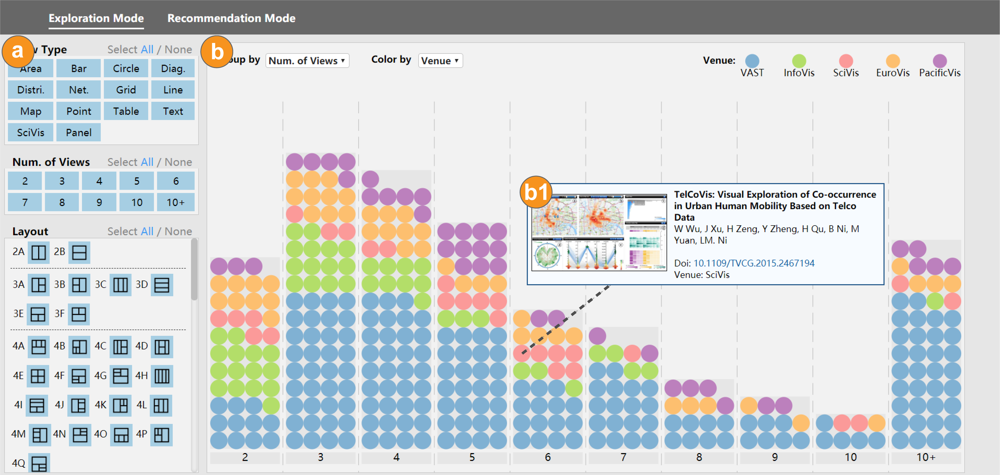

Multiple-view visualization (MV) is a layout design technique often employed to help users see a large number of data attributes and values in a single cohesive representation. Because of its generalizability, the MV design has been widely adopted by the visualization community to help users examine and interact with large, complex, and high-dimensional data. However, although ubiquitous, there has been little work to categorize and analyze MVs in order to better understand its design space. As a result, there has been little to no guideline in how to use the MV design effectively. In this paper, we present an in-depth study of how MVs are designed in practice. We focus on two fundamental measures of multiple-view patterns: composition, which quantifies what view types and how many are there; and configuration, which characterizes spatial arrangement of view layouts in the display space. We build a new dataset containing 360 images of MVs collected from IEEE VIS, EuroVis, and PacificVis publications 2011 to 2019, and make fine-grained annotations of view types and layouts for these visualization images. From this data we conduct composition and configuration analyses using quantitative metrics of term frequency and layout topology. We identify common practices around MVs, including relationship of view types, popular view layouts, and correlation between view types and layouts. We combine the findings into a MV recommendation system, providing interactive tools to explore the design space, and support example-based design.
If you find this paper useful, please consider citing it.
@article{chen2020mvlandscape,
author = {Chen, Xi and Zeng, Wei and Lin, Yanna and Al-maneea, Hayder Mahdi and Roberts, Jonathan and Chang, Remco},
title = {Composition and Configuration Patterns in Multiple-View Visualizations},
journal = {IEEE Transactions on Visualization and Computer Graphics},
volume = {27},
number = {2},
pages = {1514--1524},
year = {2021},
doi = {10.1109/TVCG.2020.3030338}
}